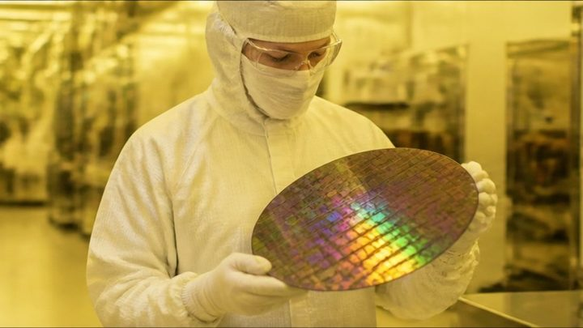

커머스 · 콘텐츠
01개인화 추천
패션 커머스: 비슷한 옷 추천
들어가 보기02브랜드 · 콘텐츠 마케팅
쇼핑몰 구매 전환 예측
들어가 보기03개인화 추천
영화 · 동영상 추천
들어가 보기04리뷰 분석
한국어 리뷰 감성 분석
들어가 보기05광고 랭킹
광고 클릭률 (CTR) 예측
들어가 보기금융 · 핀테크
06이상거래탐지 (FDS)
카드 이상거래 탐지 (보이스피싱 · 자금세탁 등)
들어가 보기07자금세탁방지 (AML)
자금세탁 거래 탐지
들어가 보기08시계열 예측
주가 지수: 내일 오를까?
들어가 보기09신용평가 (CSS)
대출 상환 · 신용평가
들어가 보기10지출 관리 (spend management)
법인카드 지출 관리
들어가 보기플랫폼 · 서비스
11대화형 인공지능
고객 문의 자동 분류
들어가 보기12실시간 가격책정
여행 예약: 취소와 가격
들어가 보기13링크 예측 (Link Prediction)
연결 예측: 사람 · 친구 추천
들어가 보기14보안관제
네트워크 침입 탐지
들어가 보기15고객 이탈 (churn)
통신사 고객 이탈 예측
들어가 보기도시 · 공간
16시공간 (spatiotemporal) 수요예측
뉴욕 택시 수요 예측 (시공간)
들어가 보기17자율주행 · 예측 (prediction)
자율주행: 옆 차 궤적 예측
들어가 보기18부동산 시세 추정
부동산: 집값 예측
들어가 보기19시공간 (spatiotemporal) 데이터
지진: 시공간 데이터
들어가 보기20환경 · 기상 서비스
미세먼지 예보
들어가 보기21에너지 · 전력
전력 수요 예측
들어가 보기22내비게이션 · 도착시간
도로 교통 속도 예측 (내비)
들어가 보기제조

23수율 · 불량 예측
반도체 공정 불량 예측
들어가 보기24예지보전
설비 고장 예측 (예지보전)
들어가 보기25품질 검사
강판 표면 결함 분류
들어가 보기26진동 · 센서 신호
베어링 진동으로 고장 진단
들어가 보기이미지 · 소리 · 3D
273D 비전
3D 포인트 클라우드
들어가 보기28의료 영상
흉부 X-ray 폐렴 찾기
들어가 보기29위성 영상
위성 사진 토지 분류
들어가 보기30농업 AI
작물 병해 진단
들어가 보기31음성 AI
음성 명령 인식
들어가 보기